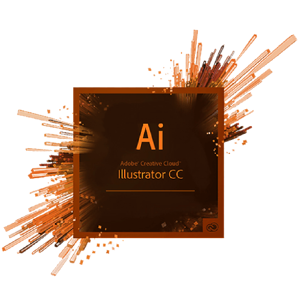
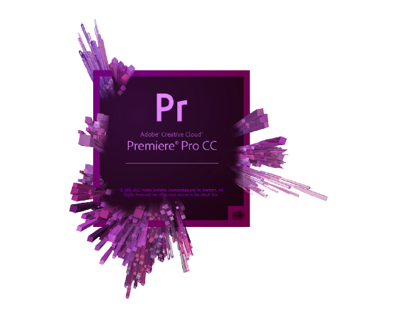
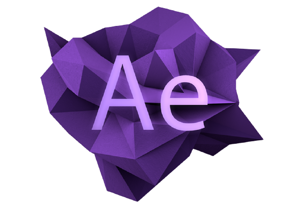

ARTIKEL

ADOBE ILUSTRATOR
Adobe Illustrator (AI) adalah program aplikasi editor desain grafis vektor yang dikembangkan dan dipasarkan oleh Adobe. Illustrator merupakan aplikasi vektor yang sangat populer di kalangan desainer grafis.
Program ini terkenal di kalangan desainer grafis karena kualitas warna pada file output-nya. Illustrator mampu menampilkan peramater warna cetak CMYK pada layar monitor RGB hampir 100% presisi dengan hasil cetaknya. Sementara di aplikasi vektor lain desainer perlu banyak melakukan konfigurasi manajemen warna monitor terlebih dahulu sebelum mencapai warna yang hampir presisi di hasil cetaknya.

ADOBE PREMIERE
Software yang dirilis sejak tahun 2003 ini, dilengkapi beberapa fitur menarik di dalamnya, seperti fitur capture video, Trim, Titler, Import dan Export Video. Selain itu, Adobe Premiere Pro juga dapat dikolaborasikan bersama dengan software editing lainnya seperti Adobe After Effects.
Saat ini, Adobe Premiere Pro telah mengalami banyak perkembangan, baik fitur maupun desain. Pada tahun 2019 lalu, telah rilis Premiere Pro terbaru dengan versi CC 2020. Tentu saja, hal tersebut semakin memudahkan para konten kreator untuk membuat video yang lebih menarik.

ADOBE AFTER EFFECTS
Adobe After Effects adalah sebuah software yang sangat profesional untuk kebutuhan Motion Graphic Design. Dengan perpaduan dari bermacam-macam software Design yang telah ada, Adobe After Effects menjadi salah satu software Design yang handal. Standart Effects yang mencapai sekitar 50 macam lebih, yang sangat bisa untuk mengubah dan menganimasikan objek. Disamping itu, membuat animasi dengan Adobe After Effects, juga bisa dilakukan dengan hanya mengetikkan beberapa kode script yang biasa disebut Expression untuk menghasil pergerakan yang lebih dinamis.
Adobe After Effects memiliki fitur-fitur penting, misalnya Adobe After Effects memiliki alat untuk membuat Shape (seperti yang terdapat pada Adobe Photoshop). Pada Adobe After Effects terdapat Keyframe seperti yang terdapat pada Adobe Flash (cara menganimasikannya juga hampir sama). Terdapat juga Expression yang hampir mirip dengan Action Script pada Flash, dan masih banyak lagi yang lain.